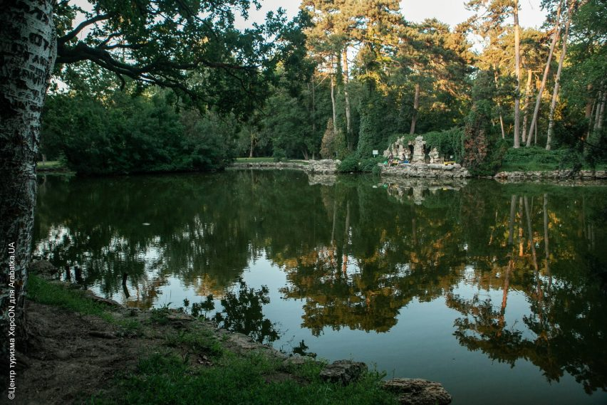
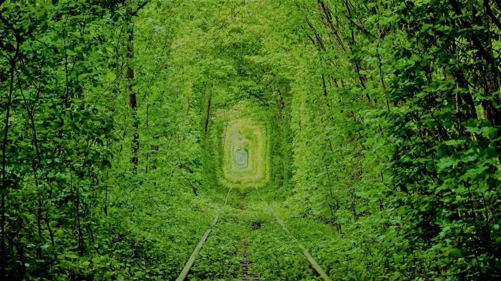
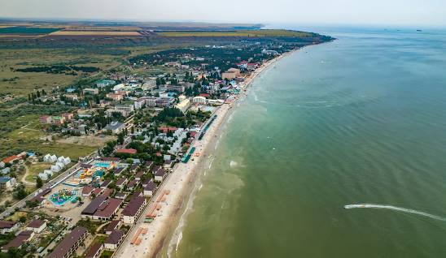
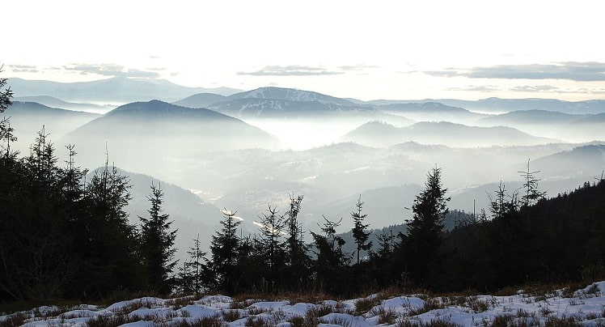

Путешествия по Украине
Настоящая страна не в выпусках новостей, а здесь.

ваша полка — верхняя
Чего мы там не видели?
По опросам ВЦИОМ, 95% граждан мечтают куда-нибудь поехать, но только
36% планируют провести отпуск в родной стране. Мол, чего мы тут, дома,
не видели? На самом деле, Украина — это целая вселенная с ласковым
морем юга, густыми лесами. А ещё увидеть все эти красоты можно без
миллионов на счету, загранпаспорта и многочасовых перелетов. Как,
например, Вера Башмакова — смелая молодая мама, которая взяла в охапку
троих детей, усадила их в свою «Ладу» и проехала 20 тысяч километров
по родной стране. Мы выбрали и описали некоторые интересные места,
достойные вашего отпуска.
- Часовой пояс 1
-
Объектов природного наследия ЮНЕСКО
8
-
Объектов культурного наследия ЮНЕСКО
8
- Природных заповедников 19
- Аэропортов 9
Аскания-Нова

"Аскания-Нова" — биосферный заповедник национального значения на
юге Херсонской области площадью более 33 тысяч гектаров
Из которых 11 тысяч — девственная степь типчаково-ковыльного типа,
единственная в Европе. Заповедник получил всемирную известность
как место, где впервые удалось получить потомство дикой лошади
Пржевальского в неволе. По территории «Аскания-Нова» проложено
несколько экскурсионных маршрутов
Клевань

Поселение Клевань, как утверждают историки, существовало уже в XII
веке под названием Колебаний.(Колебаний — это название весов
большого размера, на которых взвешивали крупный рогатый скот).
Клевань расстраивался на высоком правом берегу реки Стублы, по
которой с 1793 года и некоторое время спустя, проходил
польско-российскую границу.
Коблево

Устрицы Скифии — это устричная ферма в Коблево, которая удивляет
каждого гостя. Не многие знают о месте, где рождается лучшая
украинская устрица. Речь идет об устричной ферме под названием
Устрицы Скифии. Попробовать самые свежие и вкусные морепродукты
прежде всего можно именно здесь
Карпаты

Карпаты – горная полоса примечательная тем, что на ее территории
сохранились редкостные для Европы нетронутые леса. Карпатские горы
представляют собой в основном "мягкие", без скальных выступлений
округлые горные вершины. На плоскогорье растут брусника и черника.